Ang Makroekonomiks ay pag-aaral o pagsusuri sa kabuuang galaw ng kalagayan ng ekonomiya ng isang bansa. Ito ay tumutukoy sa pangkalahatang gawi at kalagayang pang-ekonomiko ng isang bansa. Ang ekonomiya ay kalipunan ng mga gawain ng tao, institusyon, at pamayanan na may kaugnayan sa paglikha, pamamahagi, palitan, at pagkonsumo ng mga produkto at serbisyo. Ito rin ang tumutukoy sa sitwasyong pangkabuhayan ng isang bansa. Saklaw ng Makroekonomiks • Pagsukat sa kalagayang pangkaunlaran gamit ang GNP at GDP • Katatagan ng implasyon • Pangkalahatang pamumuhunan • Kawalan ng trabaho • Kalakalang panlabas • Patakarang monetaryo • Patakarang piskal Mga Bahagi ng Ekonomiya Sambahayan – sektor na kinabibilangan ng mga pamilya o tao na kumikita ng pera. Sila ang nagbibigay ng manggagawa at lupa sa mga bahay-kalakal at bumibili ng mga produkto at serbisyo. Bahay-kalakal – sektor na gumagawa ng mga produkto at serbisyo mula sa mga hilaw na materyales upang maipagbili sa mga mamimili. Pamilihang Pinansiyal – institusyon kung saan nakakakuha ng puhunan ang mga negosyante upang makapagtayo o mapalago ang kanilang negosyo. Pamahalaan – sektor na gumagawa ng mga patakaran upang maisaayos ang ekonomiya. Nangongolekta ito ng buwis at nagbibigay ng pampublikong serbisyo sa mamamayan. Panlabas na Sektor – sektor na nagpapakita ng ugnayan ng bansa sa ibang bansa sa pamamagitan ng kalakalan at pagtatrabaho sa ibang bansa. Ang Paikot na Daloy ng Ekonomiya ay nagpapakita kung paano umiikot ang pera, produkto, at serbisyo sa pagitan ng sambahayan, bahay-kalakal, pamahalaan, at iba pang sektor.
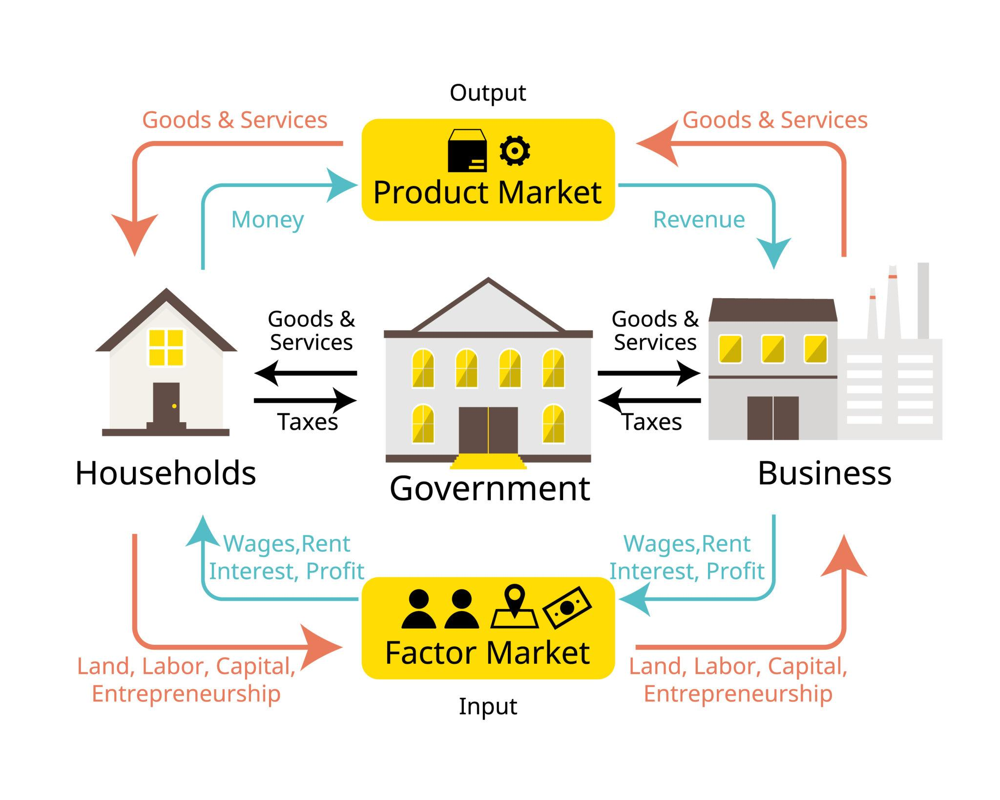
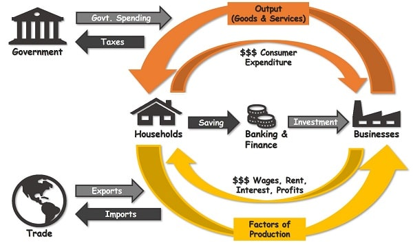
Ang pag-unlad ng bansa ay nakasalalay sa maayos na programang pang-ekonomiya ng pamahalaan. Ayon sa Saligang Batas, may tatlong pangunahing layunin sa pagtataguyod ng pambansang ekonomiya: • Makatarungang pamamahagi ng kita, pagkakataon, at kayamanan • Patuloy na paglaki ng produksyon ng kalakal at serbisyo para sa mamamayan • Lumalawak na kasaganaan na magpapataas sa antas ng pamumuhay ng tao Patakarang Pang-ekonomiya Ito ang gabay ng pamahalaan sa pagpapatupad ng mga programang pangkaunlaran upang mapabuti ang kalagayan ng ekonomiya. Mga Programang Pangkaunlaran ng Bansa • Pangangalaga sa mga manggagawa • Pangangalaga sa mga kalakal at industriyang lokal • Pagpapaunlad ng agrikultura, kagubatan, yamang tubig, at yamang mineral • Paghikayat sa mga pribadong negosyo • Pangangasiwa sa monopolyo • Pagpapaunlad ng lingkurang-bayan Pambansang Kita Ang pambansang kita ay tumutukoy sa kabuuang kita ng lahat ng sektor ng ekonomiya ng isang bansa. Kahalagahan ng Pagsukat sa Pambansang Kita • Nagbibigay ng ideya tungkol sa antas ng produksyon ng ekonomiya • Nakakatulong upang masubaybayan kung umuunlad o bumababa ang ekonomiya sa paglipas ng panahon • Nagsisilbing batayan ng pamahalaan sa paggawa ng mga patakaran at plano para sa kaunlaran ng bansa Sa pamamagitan ng National Income Accounting, maaaring masukat ang kalagayan o kalusugan ng ekonomiya.
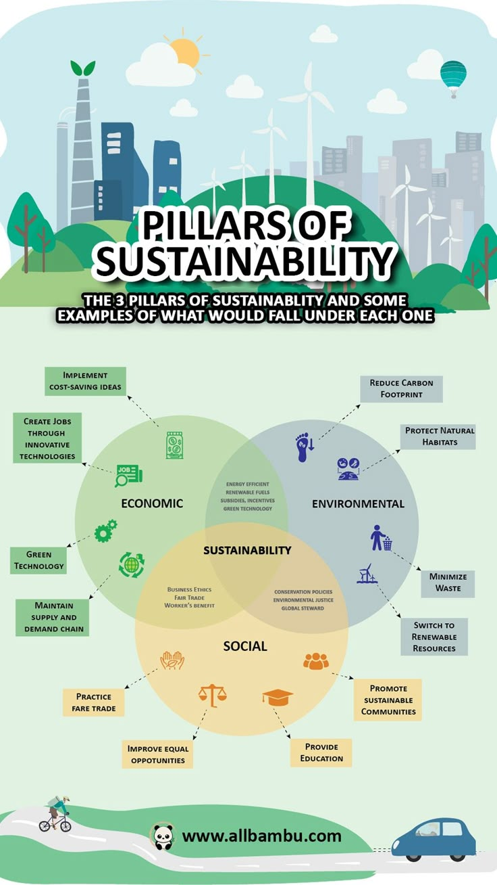
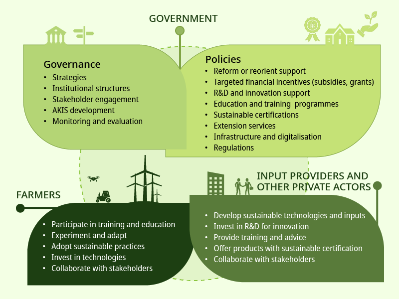
Ang Gross Domestic Product (GDP) ay tumutukoy sa kabuuang halaga ng mga produkto at serbisyo na nagawa sa loob ng isang bansa sa isang takdang panahon. Ang Gross National Income / Gross National Product (GNI / GNP) naman ay tumutukoy sa kabuuang halaga ng mga produkto at serbisyo na nagawa ng mga mamamayan ng isang bansa kahit sila ay nasa ibang bansa. Parehong ginagamit ang GDP at GNP upang masukat ang kabuuang produksyon at kalagayan ng ekonomiya. Mga Paraan ng Pagsukat ng GNP / GNI Expenditure Approach – batay sa kabuuang paggasta ng iba't ibang sektor ng ekonomiya. Income Approach – batay sa kabuuang kinita ng iba't ibang sektor ng ekonomiya. Industrial Origin / Value Added Approach – batay sa produksyon ng iba't ibang industriya sa ekonomiya.
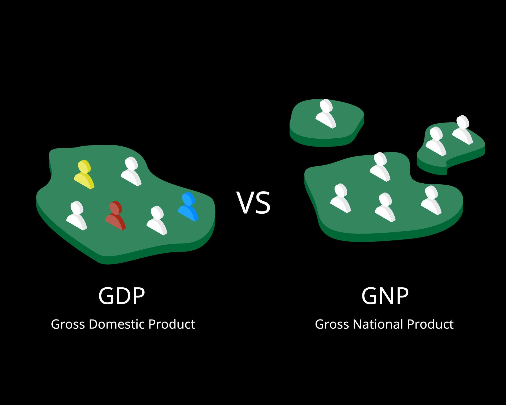
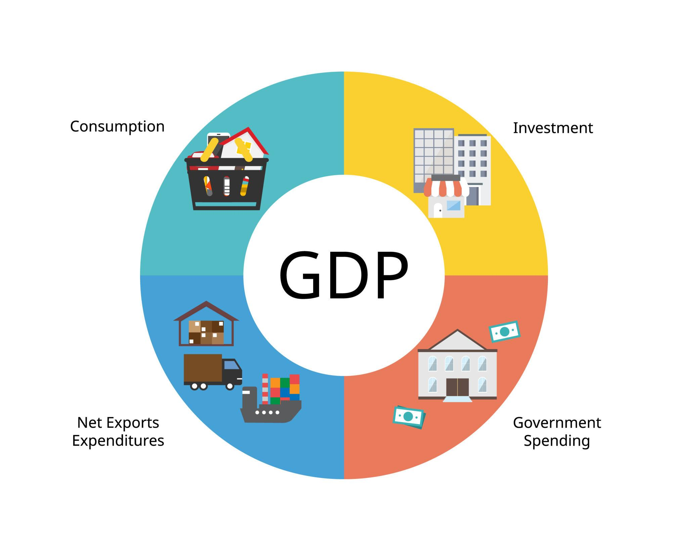
Ang implasyon ay tumutukoy sa patuloy na pagtaas ng pangkalahatang presyo ng mga bilihin sa ekonomiya. Deplasyon – patuloy na pagbaba ng presyo ng mga bilihin. Hyperinflation – mabilis at matinding pagtaas ng presyo ng mga bilihin sa maikling panahon. Mga Salik na Nakaaapekto sa Implasyon • Pagtaas ng suplay ng salapi • Pagdedepende sa importasyon ng hilaw na sangkap • Pagtaas ng palitan ng piso sa dolyar • Kalagayan ng pagluwas ng mga produkto • Monopolyo o kartel • Pambayad-utang ng pamahalaan Uri ng Implasyon Low Inflation – mabagal na pagtaas ng presyo ng mga bilihin bawat taon. Galloping Inflation – umaabot sa doble o triple digit ang inflation rate kada taon. Hyperinflation – higit sa 50% ang pagtaas ng presyo bawat buwan. Dahilan ng Implasyon Demand-Pull Inflation – mataas ang demand ngunit kulang ang supply ng produkto. Cost-Push Inflation – tumataas ang gastos sa produksyon ng mga negosyo. Oil-Push Inflation – pagtaas ng presyo ng langis sa pandaigdigang pamilihan. Structural Inflation – nagaganap dahil sa problema o hindi pagkakasundo sa iba't ibang sektor ng ekonomiya. Stagflation – nagaganap kapag may implasyon kahit mabagal ang paglago ng ekonomiya. Epekto ng Implasyon Mga Nakikinabang • Mga speculators na bumibili ng ari-arian na tumataas ang presyo • Mga mangungutang na nagbabayad ng utang sa mas mababang halaga • Mga taong hindi tiyak ang kita tulad ng negosyante Mga Hindi Nakikinabang • Mga nagpapautang • Mga nag-iimpok sa bangko • Mga taong may tiyak na kita tulad ng empleyado Solusyon sa Implasyon • Pagpapatupad ng tight money policy • Pagkontrol sa presyo ng mga bilihin • Pagpapataas ng produksyon • Pagpigil sa pananamantala sa presyo
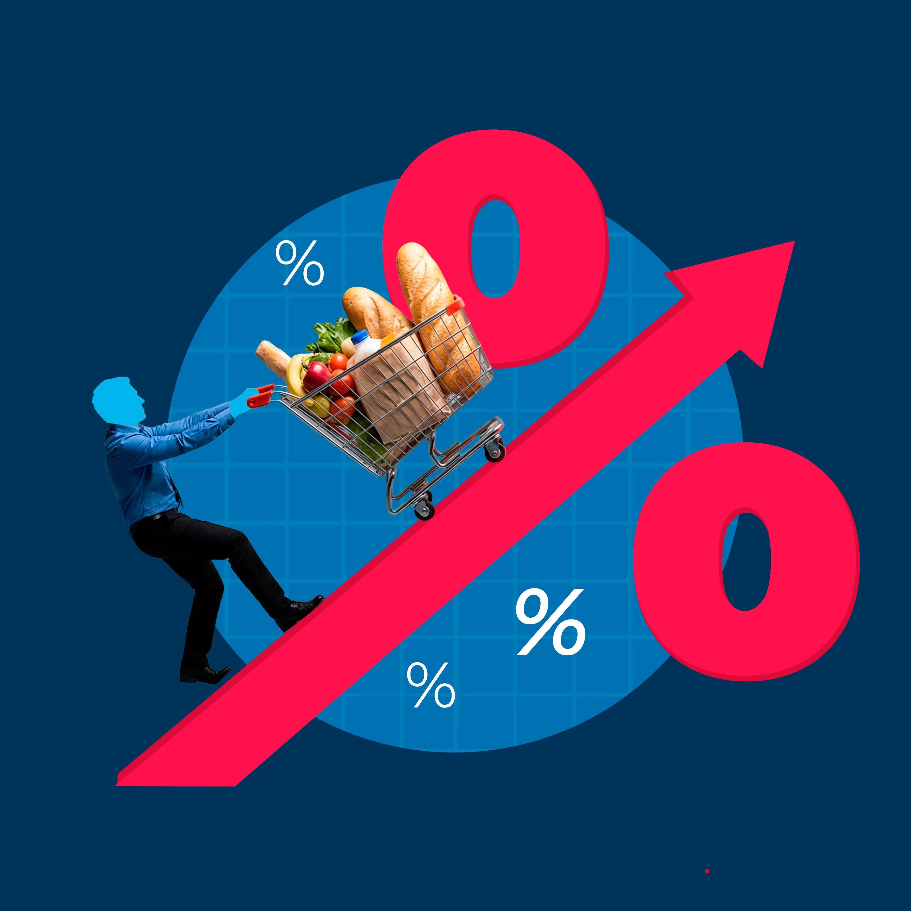
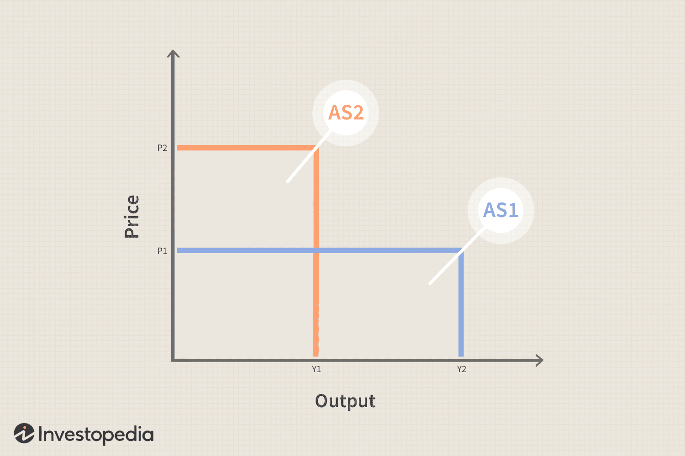
Ang Pagsukat sa Pagbabago ng Presyo ay mahalaga upang malaman kung paano nagbabago ang halaga ng mga produkto at serbisyo sa paglipas ng panahon. Ginagamit ito upang makita kung tumataas o bumababa ang presyo ng mga bilihin sa ekonomiya. Price Index Ang Price Index ay tumutukoy sa average na bigat ng mga presyo sa isang takdang panahon bilang porsiyento ng average ng bigat ng mga presyo sa isang basehang taon. Sa pamamagitan nito, makikita kung gaano kalaki ang pagbabago ng presyo ng mga produkto kumpara sa nakaraang taon. Mga Formula sa Price Index WP = P(Q) PWP = WP / TWP TWP = Total of WP PI = B₂ / B₁ × 100
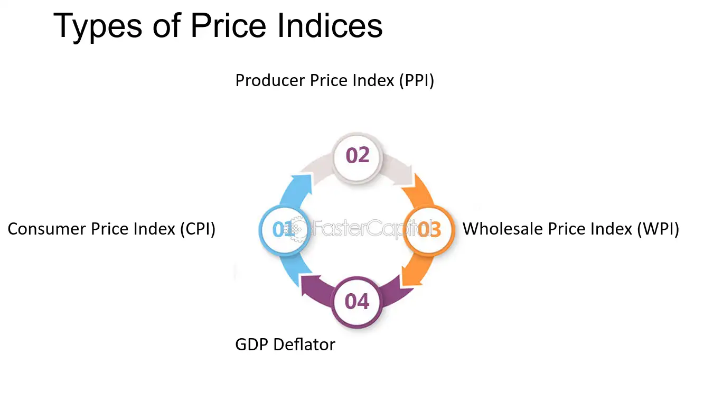
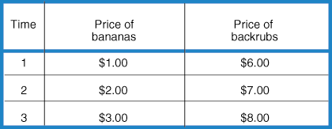
Ang Patakarang Piskal ay tumutukoy sa pamamalakad ng pamahalaan sa paggamit ng pera ng bayan upang mapabuti ang kalagayan ng ekonomiya. Ito ay may kinalaman sa paggastos ng pamahalaan at pagbubuwis upang maimpluwensyahan ang antas ng kita at produksyon sa bansa. Layunin ng Patakarang Piskal Pagpapatatag ng Ekonomiya Layunin nitong maiwasan ang matinding pagbabago sa ekonomiya. Ipinapakita nito ang mababa at matatag na implasyon at tuloy-tuloy na pagtaas ng produksyon. Paglagong Ekonomiko Ito ay tumutukoy sa pagtaas ng dami o halaga ng produkto na nalilikha sa isang bansa sa loob ng isang takdang panahon. Karaniwang sinusukat ito gamit ang GDP at GNP. Instrumento ng Patakarang Piskal Paggastos ng Pamahalaan Tumutukoy sa mga programang pinaglalaanan ng badyet upang mapaunlad ang ekonomiya ng bansa. Pagbubuwis Ang pangunahing pinagkukunan ng kita ng pamahalaan. Ito ay sapilitang kontribusyon na ibinabayad ng mga mamamayan at negosyo sa pamahalaan. Pamamaraan ng Patakarang Piskal Neutral Fiscal Policy Ipinapakita nito ang balanseng badyet kung saan ang gastusin ng pamahalaan ay katumbas ng buwis na nakolekta. Expansionary Fiscal Policy Ginagamit kapag mababa o bumabagal ang ekonomiya upang muling mapalakas ang produksyon at paggasta. Contractionary Fiscal Policy Ginagamit kapag masyadong mabilis ang paglago ng ekonomiya upang maiwasan ang sobrang implasyon.
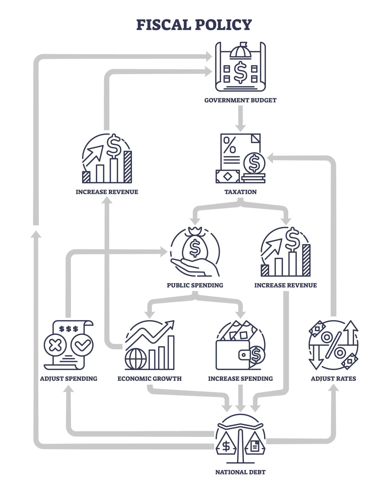
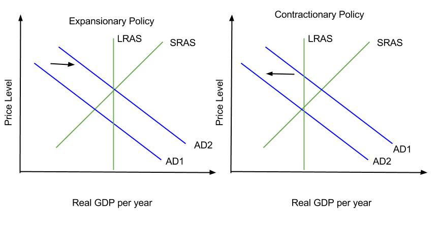
Ang Pambansang Badyet ay taunang pormal na pahayag ng mga kikitain at gagastusin ng pamahalaan para sa susunod na taon. Ito ang plano ng pamahalaan kung paano gagamitin ang pera ng bayan upang matupad ang mga layunin nito para sa ekonomiya. Proseso ng Pagbabadyet Unang Yugto – Paghahanda ng Badyet Ang bawat kagawaran ng pamahalaan ay naghahanda ng kanilang badyet. Pinagsasama ito ng Department of Budget and Management (DBM) at ipinapasa sa Pangulo. Ikalawang Yugto – Ratipikasyon ng Badyet Ang badyet ay sinusuri at pinagdedebatehan ng House of Representatives at Senado bago aprubahan. Ikatlong Yugto – Implementasyon ng Badyet Ipinamamahagi ang naaprubahang badyet sa iba't ibang ahensya upang maisagawa ang mga programa ng pamahalaan. Ikaapat na Yugto – Rebyu ng Badyet Sinusuri ng Commission on Audit (COA) at iba pang institusyon kung tama ang paggamit ng badyet. Limang Kategorya ng Alokasyon ng Pambansang Badyet • Serbisyong Panlipunan • Serbisyong Pang-ekonomiko • Tanggulang Pambansa • Pangkalahatang Serbisyo Publiko • Serbisyo sa Utang Pinagmumulan ng Kita ng Pamahalaan Buwis (Tax Revenues) • Income Tax • Value Added Tax (VAT) • Special Taxes tulad ng motor vehicle tax at sin tax Di-Buwis (Non-Tax Revenues) • Bayarin at multa • Kita mula sa government assets at grants
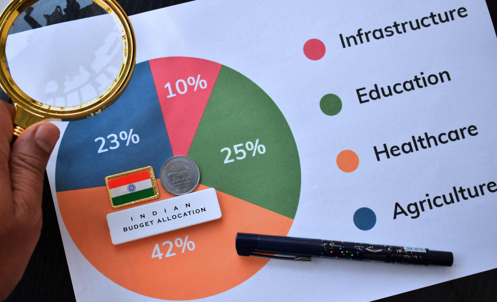
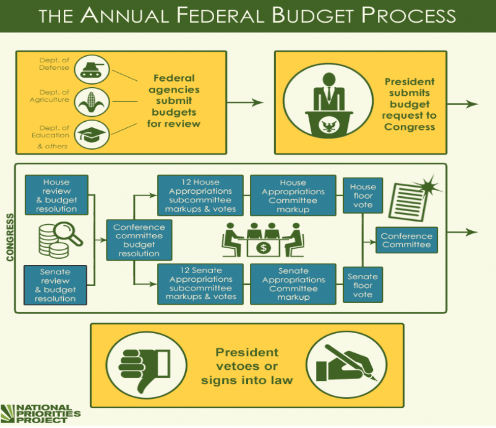
Ang Patakarang Pananalapi ay tumutukoy sa pamamahala o pagkontrol sa suplay ng salapi sa ekonomiya upang mapanatili ang katatagan ng halaga ng pera. Ito ay ipinatutupad ng Bangko Sentral ng Pilipinas (BSP). Uri ng Monetary Policy Expansionary Money Policy (Easy Money Policy) Layunin nitong hikayatin ang mga negosyante na magbukas o magpalawak ng negosyo sa pamamagitan ng pagpapababa ng interes sa pagpapautang. Contractionary Money Policy (Tight Money Policy) Layunin nitong bawasan ang paggasta at pamumuhunan upang mapababa ang implasyon. Salapi Ang salapi ay ginagamit bilang tagapamagitan sa palitan ng mga produkto at serbisyo sa ekonomiya. Mga Uri ng Salapi • Commodity Money – mga bagay tulad ng ginto, pilak, at tanso na ginagamit noon bilang pambayad. • Credit Money – mga instrumentong pinansyal tulad ng tseke at promissory note. • Fiat Money – salaping kinikilala bilang legal tender ng pamahalaan. Tungkulin ng Salapi • Instrumento ng palitan • Pamantayan ng halaga • Pamantayan ng maaantalang pagbabayad • Reserba ng halaga
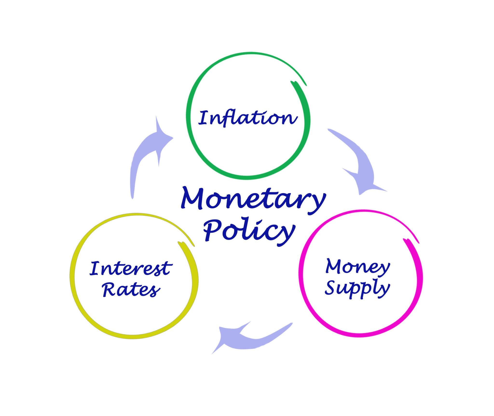
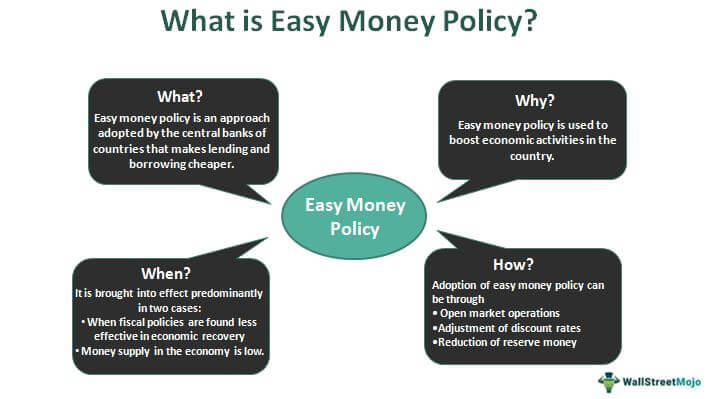
Ang Savings ay ang halagang natitira kapag ibinawas ang kabuuang gastos sa pagkonsumo mula sa kita ng isang tao. Ang Pamumuhunan (Investment) ay tumutukoy sa ari-arian o kapital na ginagamit ng mga negosyo upang makalikha ng kita sa hinaharap. Savings Function Ang pag-iimpok ay bahagi ng kita matapos ibawas ang buwis. Ang sambahayan ang nagpapasya kung gagastusin o iipunin ang kanilang kita. Katangian ng Savings Function Average Propensity to Save (APS / APC) Ito ang bahagi ng kabuuang kita na naiipon. Marginal Propensity to Save (MPS) Ito ang bahagi ng pagbabago sa pag-iimpok kapag nagbabago ang kita. Mga Dahilan ng Pag-iimpok • Kayamanan • Inaasahan sa hinaharap • Utang • Buwis 7 Habits of a Wise Saver Kilalanin ang iyong bangko Alamin ang produkto ng bangko Alamin ang mga serbisyo at bayarin Ingatan ang bank records Makipagtransaksyon lamang sa awtorisadong tauhan Alamin ang PDIC deposit insurance Maging maingat sa paghawak ng pera
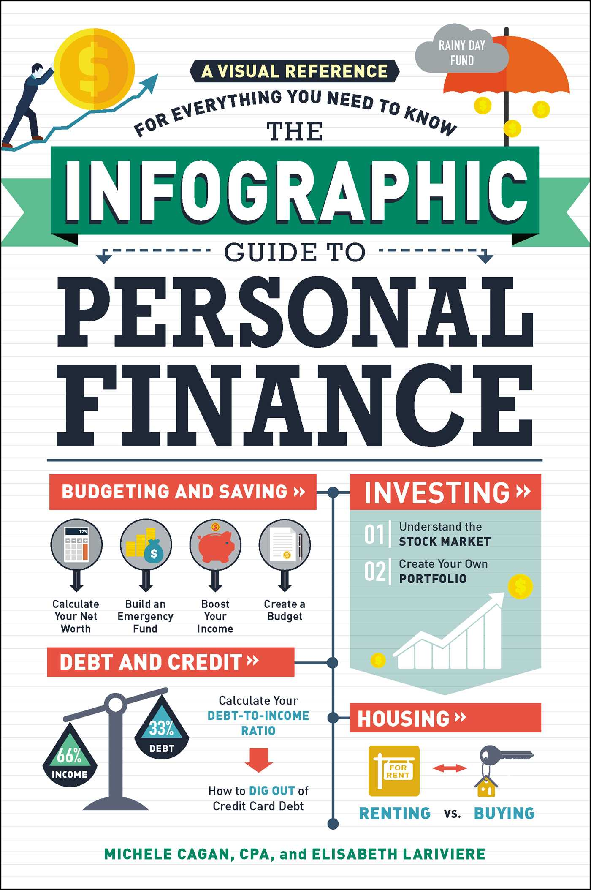